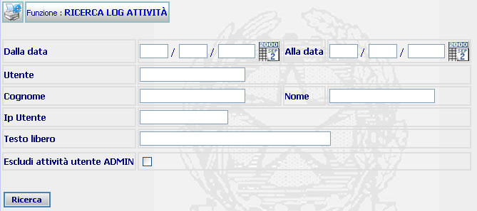
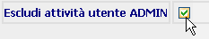
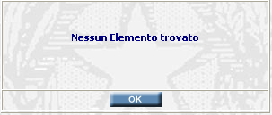

GENERALITA'
RICERCA LOG ATTIVITA': La funzione consente di effettuare la ricerca di attività effettuate e registrate nel sistema.
LE MASCHERE VIDEO
La funzione in esame viene realizzata attraverso l'utilizzo della seguente maschera che riporta gli elementi descrittivi e operativi del log delle attività.

COME FARE PER ...
| Per ricercare uno o più determinate attività l'amministratore deve: |
Posizionarsi sulla scheda di Ricerca Log Attività.
Introdurre i dati per i quali si vuole effettuare la ricerca; è possibile introdurre i dati anche di un solo campo;
ATTENZIONE: siccome la ricerca agisce su una base dati vastissima, si raccomanda di filtrare il più possibile la ricerca, attraverso la compilazione di tutti i campi possibili.
Escludere opzionalmente dalla ricerca le attività effettuate dall'utente ADMIN (Aministratore) spuntando il campo:

Agire sul pulsante
per visualizzare l'elenco attività che soddisfano la ricerca.
CAMPI
I dati che consentono di definire un nuovo soggetto sono i seguenti:
| NOME | DESCRIZIONE |
| Dalla Data | Compilare il campo data nel formato gg/mm/aaaa. |
| Alla Data | Compilare il campo data nel formato gg/mm/aaaa. |
| Utente | Compilare il campo con testo libero |
| Cognome | Compilare il campo con testo libero |
| Nome | Compilare il campo con testo libero |
| IP Utente | Compilare il campo con testo libero |
| Testo Libero | Compilare il campo data nel formato gg/mm/aaaa. |
PULSANTI
Oltre al pulsante
 che fa parte del gruppo di
pulsanti di "Uso Comune"
è presente il seguente pulsante:
che fa parte del gruppo di
pulsanti di "Uso Comune"
è presente il seguente pulsante:
|
PULSANTE |
DESCRIZIONE |
|
|
Questo pulsante ha lo scopo di selezionare una data da un calendario elettronico e con essa riempire il contenuto del campo corrispondete. |
BOTTONI
Oltre ai comandi funzionali relativi al menù verticale sono presenti i seguenti comandi:
|
COMANDI |
DESCRIZIONE |
|
|
A fronte di tale comando, il sistema dopo aver verificato la validità dei dati specificati, visualizza l'elenco attività che soddisfano la ricerca. |
CONTROLLI
A fronte della pressione
del bottone
 , il
sistema verifica che:
, il
sistema verifica che:
tutti i campi siano stati compilati correttamente;
esista uno o più attività rispondenti ai canali di ricerca selezionati.
Se il sistema non troverà alcuna attività rispondente ai criteri di ricerca impostati verrà visualizzato il seguente messaggio:

Se il sistema non riscontrerà errori verrà visualizzata la maschera contenente l'elenco attività che soddisfano la ricerca.